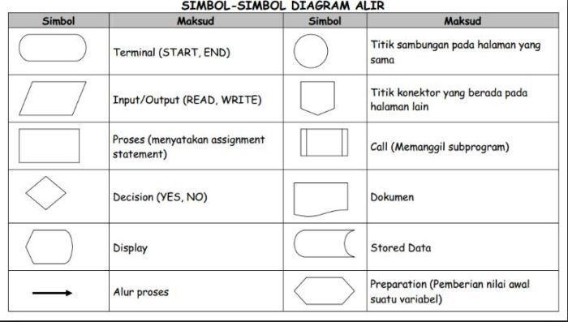
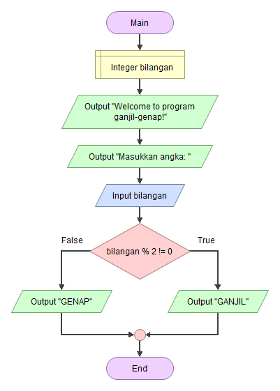
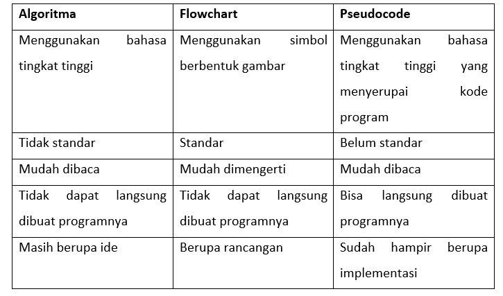

Melihat fenomena sekarang mengenai perkembangan dunia teknologi yang
begitu pesat menjadi hal wajar diketahui.
Terlebih banyak orang yang ingin menekuninya. Hal dasar jika belajar
dunia teknologi pasti akan jumpai istilah pemrograman.
Kemudian, dalam pemrograman akan dijumpai juga sebutan algoritma
pemrograman.
Untuk itu, pada artikel ini akan membahas :
"Algoritma itu apa ?"
"Berkenalan dengan istilah flowchart."
"Apa maksud dari Pseudocode."
Algoritma itu apa?
Algoritma adalah sekumpulan instruksi yang merupakan penyelesaian
masalah itu dinamakan program. Agar program dapat dilaksanakan oleh
komputer, program tersebut harus ditulis dalam suatu bahasa yang
dimengerti oleh komputer. Bahasa komputer yang digunakan dalam menulis
program dinamakan bahasa pemrograman Urutan langkah-langkah yang
sistematis untuk menyelesaikan sebuah masalah dinamakan algoritma. Jadi
algoritma adalah urutan logis pengambilan keputusan untuk pemecahan
masalah.
Ciri-ciri algoritma:
• Langkah tersebut akan berhenti dan benar
• Mempunyai bentuk yang sederhana sehingga efektif
• Langkah-langkahnya jelas dan pasti
Flowchart itu apa?
Flowchart merupakan sebuah diagram alir yang mengambarkan arus data dari
algoritma yang telah dibuat, terlebih algoritma yang bersifat kompleks.

Flowchart mempunyai beberapa daftar beberapa simbol yang digunakan
dengan masing-masing fungsinya. Simbol-simbol ini menjadi penanda bahwa
alur kerja algoritma itu berproses dengan beberapa tahapan.

Contoh dari flowchart sederhana mendapatkan bilangan genap atau ganjil.
DImana terdapat beberapa simbol flowchart yang menjelaskan alur dari
kerja yang sedang terjadi.
Apa itu Pseudocode?
Pseudocode berasal dari kata pseudo dan code yang artinya kode semu atau
menyerupai kode program sebenarnya. Itu berarti pseudocode bukanlah kode
program yang sebenarnya, melainkan menggunakan suatu bahasa pemrograman
tertentu. Pseudocode berbeda dengan flowchart. Jika flowchart
menggunakan sombol-simbol berbentuk gambar untuk menjelaskan alur logika
berpikir sehingga dapat digunakan untuk membuat atau menjelaskan suatu
program, pseudocode menggunakan bahasa sehingga tidak berupa gambar
lagi.

Artikel ini berdasarkan modul Algoritma. Pelajari selengkapnya di bawah
ini.